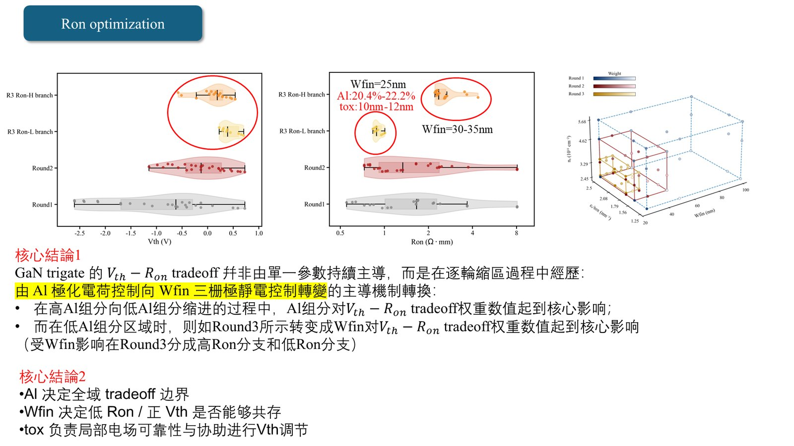
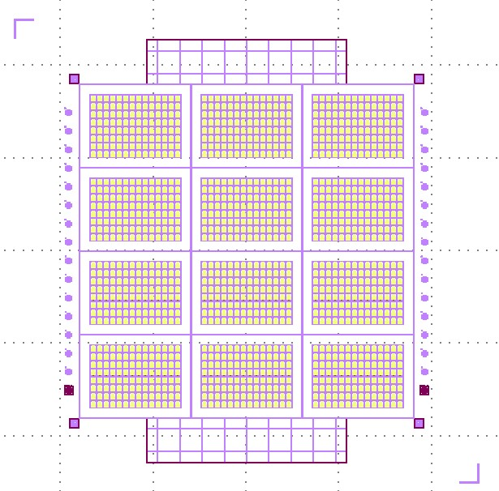
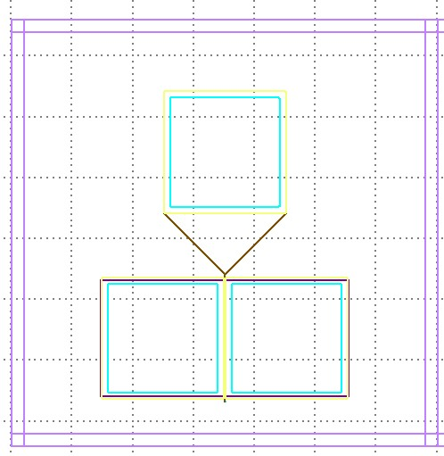

模拟与设计
用 TCAD 建立 GaN Trigate / narrow-fin 结构，追踪 Vth、Ron、BV、Id-Vg、Id-Vd 与 E-field。
TCAD-based device design with electrical and field extraction.
GaN Trigate · Process DOE · TCAD · EDA Tools
我是陈秉佑（Ping Yu-Chen / Bill Chen）。我的研究从 GaN Trigate 元件设计出发，延伸到 TCAD 模拟、 光罩与版图设计、E-beam 与 etch 制程开发，以及量测资料回馈。我也喜欢写工具，把 AI 和自动化放进科研日常。
I work on GaN Trigate devices across simulation, photomask design, process development, and measurement feedback. I also build small AI-assisted tools that make research workflows easier to repeat, inspect, and improve.


用 TCAD 建立 GaN Trigate / narrow-fin 结构，追踪 Vth、Ron、BV、Id-Vg、Id-Vd 与 E-field。
TCAD-based device design with electrical and field extraction.
把元件参数、测试结构、probe pad、alignment、AutoCAD / GDS / DXF 流程串起来。
Photomask and layout work that connects device ideas to measurable structures.
整理 E-beam lithography、hardmask transfer、ICP-RIE etch profile 与 process window。
Process DOE for lithography, hardmask transfer, and dry etching.
从 CD/SEM 到 TLM、Id-Vg、Id-Vd、breakdown，把结果带回下一轮设计。
Measurement feedback closes the loop between fabrication and design.
Research
我的核心问题是：一个 GaN Trigate 元件，怎样从结构假设走到可制程、可量测、可解释的结果。 所以我不只看单点性能，也会同时考虑 Vth-Ron-BV tradeoff、Epeak 限制、fin/profile 可制造性， 以及后续量测 pattern 是否足够支撑判断。
My research asks how a GaN Trigate device can move from a structural hypothesis to a fabricable, measurable, and physically interpretable result. I care about the design tradeoff as much as the process path.

Photomask
光罩设计是我把 TCAD 结果带向实验的关键环节。版图里不只要画出元件，还要让测试结构、pad、 routing、alignment 与制程层次能够被检查、被制作、被量测。
Photomask design is where simulation begins to meet fabrication. I design device arrays and test cells with measurement, routing, alignment, and process-layer constraints in mind.


Research Notes
这里放的是我在研究过程中整理出的关键页面：AI-guided TCAD、D-mode / E-mode 制程流程、 E-beam lithography 的问题拆解，以及 etch SEM diagnosis 与 DOE 设计。
These selected pages summarize my current research notes: AI-guided TCAD, process flows, E-beam lithography diagnosis, SEM-based etch interpretation, and DOE planning.


Analog IC
大学课程专题中，我参与差分放大电路、迟滞比较器与带隙基准相关电路设计。工作包含原理分析、 尺寸设计、Cadence 前仿 testbench、版图协作、DRC/LVS、寄生参数萃取与后仿验证。
In my undergraduate Analog IC project, I worked on differential amplifier and hysteresis comparator design, including schematic simulation, layout, DRC/LVS, parasitic extraction, and post-layout verification in Cadence.
这个专题让我熟悉 CMRR、PSRR、gain、phase margin、offset、corner simulation 与 post-layout checking。
It trained me to connect circuit specifications, simulation waveforms, layout matching, and verification flow.


Projects
我喜欢把研究中反复出现的步骤做成工具：有些用来整理文献，有些用来协助 EDA 和光罩设计， 有些用来追踪 GaN 产业动态，也有些是我把大学到研究所课程知识整理成图谱的长期项目。
I build small tools for recurring research tasks: literature work, EDA support, GaN industry tracking, and a personal knowledge graph that connects my undergraduate and graduate coursework.
Website · EDA tools
把实验室常用的 EDA、版图、模拟与科研辅助工具整理成可访问的入口。
A public entry point for lab-oriented EDA and research-assistant tools.
Open siteRailway · GaN intelligence
追踪 GaN 产业新闻、论文、公司动态与市场资讯，用来维持研究方向感。
A live GaN intelligence monitor for industry news, papers, companies, and market signals.
Open siteLocal tool · Literature
本地文献整理工具，用来管理论文、主题、笔记和阅读状态；目前不放公开链接。
A local literature workflow for papers, topics, notes, and reading status.
Personal knowledge graph
我从大学到研究所课程建立的个人知识图谱，连接半导体、电子电路、制程、模拟和研究笔记。
A personal knowledge graph connecting coursework, semiconductor topics, circuits, process, and research notes.
Life
旅行、朋友、城市、山路、拼模型和临时冒出的工具点子，都是我认识世界的方式。 我喜欢把生活里的观察带回研究，也喜欢用 AI 做一些让自己和同伴更省力的小应用。
Travel, friends, cities, mountains, model kits, and tiny software ideas are all part of how I keep life vivid.


Contact
如果你也在做 GaN、TCAD、EDA automation、类比 IC 或研究工具，欢迎联系我。
I am always happy to talk about GaN devices, TCAD, EDA automation, analog IC, and research tools.